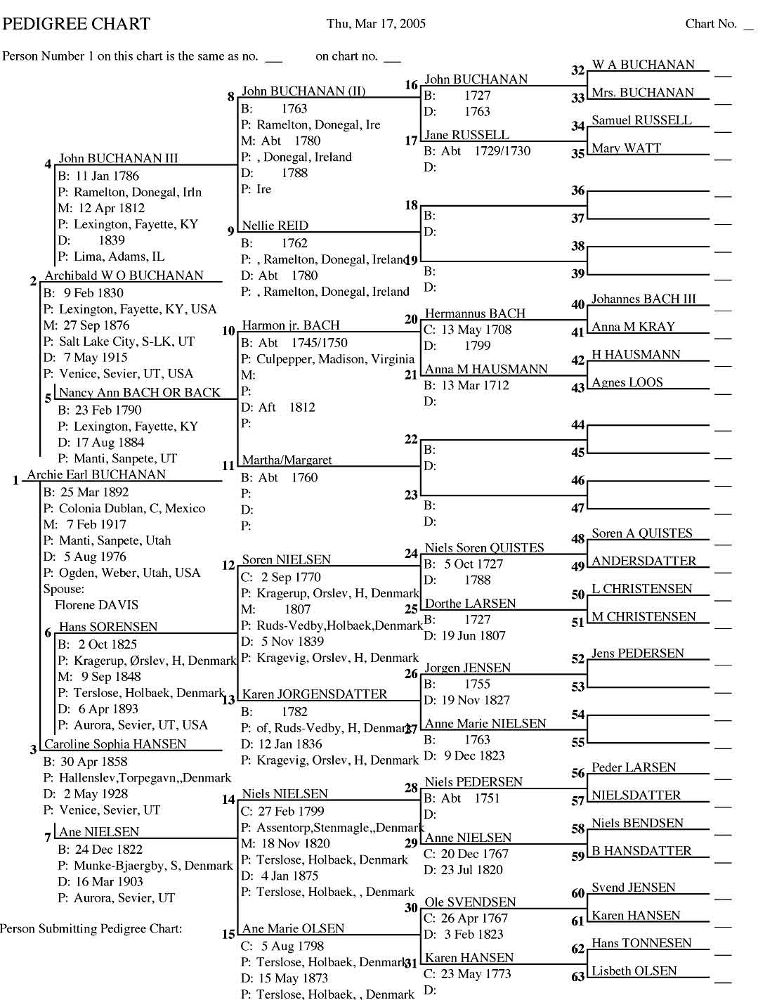

Pedigree and Family Group Charts
Home
Histories
Charts - - >
Photos
Maps
Restricted
News
Info
Contact
John Buchanan
Hans Sorensen
John Johnson Davies
Shadrach Roundy
Florene Davis Pedigree Chart as PDF
Archie Earl Buchanan Pedigree Chart as PDF
Archibald and Caroline Buchanan Family Group as PDF
Shadrach Roundy Pedigree Chart as PDF
